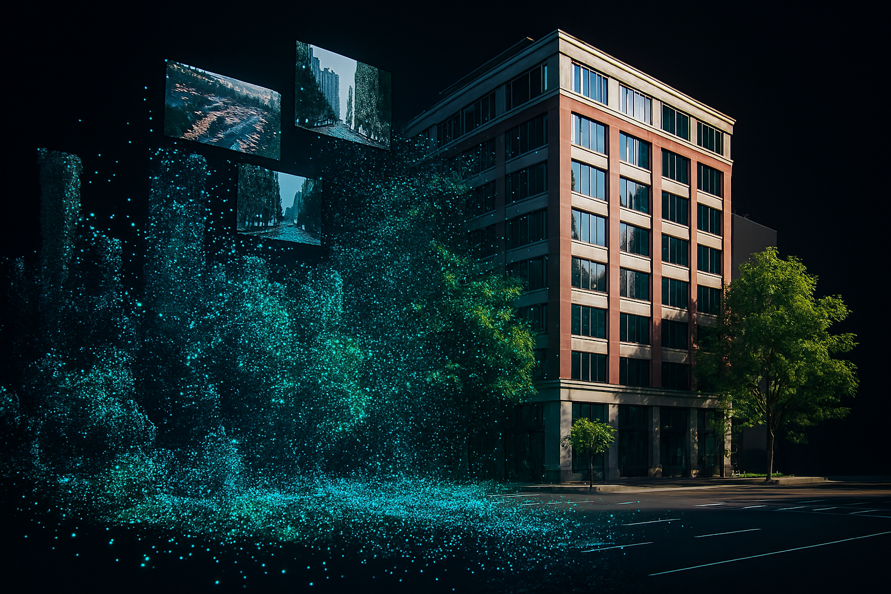
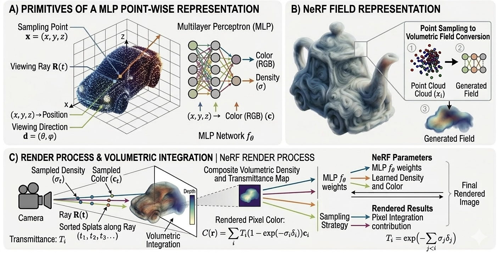
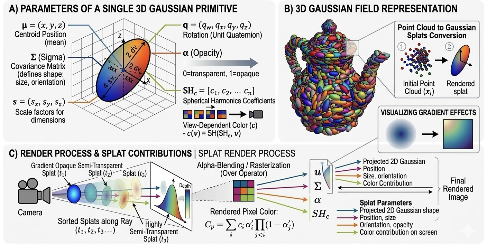
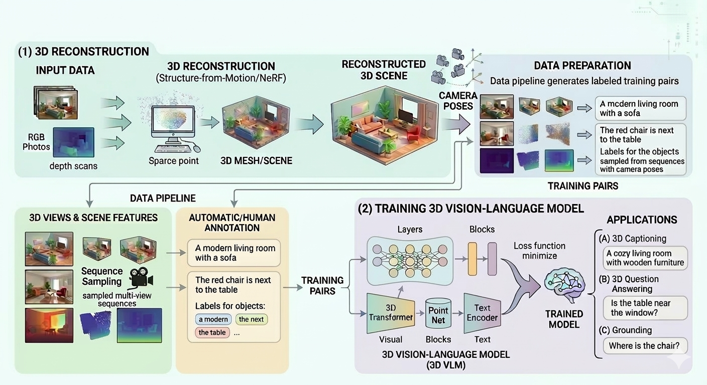

Introduction
For a long time, if you wanted a 3D model of a real object, you had two main options: you could buy an expensive laser scanner that gives you accurate geometry but no color, or you could try photogrammetry—taking many photos and letting software struggle to stitch them into a messy point cloud. Both ways required expertise, patience, and a lot of manual cleanup. The idea of just walking around an object with your phone and getting a perfect, photorealistic 3D model felt like science fiction.
But in the last five years, that science fiction has become reality. The field of 3D reconstruction has completely transformed. We've moved from slow, fragile pipelines to methods that can capture reflections, transparent materials, and even moving scenes from ordinary video. To understand where we are, it helps to see where we came from. The timeline below sketches out the main eras.
Let me walk you through what each of these boxes means, because they set the stage for everything else.
Traditional approaches are what people used for years. Think of Structure-from-Motion (SfM) and Multi-View Stereo (MVS). The idea is simple: you take photos, the software finds distinct points (like corners of a window) in multiple images, and then it triangulates where those points must be in 3D space. The result is a sparse point cloud. To get a solid surface, you run dense matching algorithms that try to fill the gaps. These methods work well when the scene has lots of texture and not too many reflective surfaces. But they often fail on blank walls, shiny cars, or anything transparent. And the output is just geometry—you get a shape, but the realistic appearance has to be mapped on separately as a texture.
Then came the neural implicit revolution around 2020, with NeRF (Neural Radiance Fields) leading the charge. Instead of storing points or a mesh, NeRF uses a small neural network to remember the scene. You train the network on the photos, and afterward you can ask it: "what color and how much stuff is at this 3D location, viewed from this direction?" It's a continuous representation—there are no holes or gaps. And because it's trained on the actual appearance, it captures tricky things like reflections, fog, and fuzzy materials. The downside? Training can take hours, and rendering a single frame might take seconds. It's beautiful but slow.
The newest approach is 3D Gaussian Splatting (3DGS), introduced in 2023. Instead of a neural network, it represents scenes using thousands of tiny, fuzzy ellipsoids called 3D Gaussians. Each one has a position, a shape, a color, and a transparency. During rendering, these ellipsoids are projected onto the image—"splatted"—in a way that's very fast (over 100 frames per second). Training takes just minutes instead of hours. It combines the best of both worlds: explicit control like traditional methods, but visual quality approaching NeRF.
Now you might wonder: why does all of this matter? The way we capture 3D shapes how we use it. If you want a digital twin of a city for planning, traditional geometry might be sufficient. If you're making a movie and need a realistic actor, NeRF's quality might be worth the wait. And if you want real-time AR on a phone, Gaussian splatting is your best friend. These aren't just incremental improvements—they're fundamentally different ways of thinking about 3D.
In the rest of this post, we'll dig deeper into each method, then zoom out to look at the bigger vision: building not just beautiful worlds for humans to explore, but understandable worlds for machines to navigate.
What is 3D Reconstruction?
At its core, 3D reconstruction is the process of capturing the shape—and increasingly the appearance—of a real-world object or environment to create a digital 3D model. Think of it as giving a computer the power to perceive depth and volume from flat, 2D images. The input is typically a set of photographs taken from different angles, and the output can be anything from a sparse point cloud to a dense, textured mesh that you can view from any perspective. It's the technology behind Google Maps' immersive view and the realistic assets in your favorite video game.
Multiple View Geometry
This is the classical, mathematical foundation of 3D reconstruction. Multiple View Geometry (MVG) provides the rules for projecting 3D points onto 2D images and, crucially, for triangulating the original 3D position of a point by finding its projection in two or more images. The core idea is simple but elegant: if a point in the real world is visible in two different camera views, we can draw rays from each camera through the corresponding image points. Where those rays intersect in 3D space is the location of the original point. This is called triangulation.
Algorithms like Structure-from-Motion (SfM) use MVG to simultaneously estimate the position of cameras in a scene and the 3D location of thousands of feature points (like corners or textures). The result is a sparse point cloud and accurate camera positions. A key concept here is epipolar geometry: given a point in one image, its matching point in another image must lie along a specific line called the epipolar line. This constraint dramatically speeds up the search for correspondences and makes the whole pipeline robust. While the final output might look primitive compared to modern methods, MVG is the unsung hero that provides the initial camera alignment needed for almost every advanced technique, including NeRFs and Gaussian Splatting.
Neural Radiance Fields (NeRF)
If MVG is about geometry, NeRF is about appearance and continuity. Introduced in 2020, NeRF represented a paradigm shift. Instead of storing a discrete mesh or point cloud, a NeRF encodes a continuous 3D scene inside the weights of a small neural network—specifically, a Multilayer Perceptron (MLP). The key insight is to represent the scene as a function that maps a 5D coordinate—a 3D location (x, y, z) and a viewing direction (θ, φ)—to an output of color (r, g, b) and volume density (σ). Think of it as teaching the network to become the scene.
During training, we sample points along rays cast from cameras through pixels in our input images. For each sampled point, we query the MLP with its position and the ray's direction to get a predicted color and density. We then use volumetric rendering—accumulating these values along the ray—to produce a final pixel color. By comparing this rendered color to the ground truth pixel from our photograph, we can compute a loss and update the network's weights. Over thousands of iterations, the network learns to represent the scene's geometry (where things are solid) and its view-dependent appearance (how things look from different angles). This is why NeRF can capture complex effects like specular highlights and reflections that traditional methods miss.

The trade-off: training a NeRF can take hours, and rendering a single image is computationally heavy because it requires hundreds of network queries per pixel. But the results are stunning: photorealistic novel views with fine volumetric details like smoke, fur, and translucent materials. Subsequent research has dramatically improved speed (with methods like Instant NGP using hash encodings) and quality, but the core idea of implicit neural representation remains revolutionary.
3D Gaussian Splatting (3DGS)
Enter 3D Gaussian Splatting, the newest approach that combines strengths from both worlds. Instead of a neural network, 3DGS represents a scene explicitly as a collection of millions of tiny, semi-transparent ellipsoids—called 3D Gaussians. Each Gaussian primitive is defined by a set of learnable parameters: a 3D position (mean), a covariance matrix that determines its shape and orientation (stretching and rotating the ellipsoid), an opacity value (α), and a set of spherical harmonic coefficients that encode view-dependent color. This representation is both expressive and efficient.
What makes 3DGS special is the rendering algorithm. During rendering, these 3D Gaussians are projected onto the 2D image plane—a process called "splatting." For each pixel, we sort the Gaussians that cover it by depth and blend their colors front-to-back, weighted by their opacity and the Gaussian's value at that pixel location. This is all done in a highly parallel, tile-based rasterizer that runs on GPUs at high speed. Because the Gaussians are continuous functions, splatting produces smooth, antialiased images without the blockiness of discrete points. And crucially, every step is differentiable, meaning we can optimize all the Gaussian parameters by comparing rendered images to training photographs.

This hybrid approach—explicit enough to edit and control, but continuous enough to look as good as NeRF—has made 3DGS the preferred method for applications that demand speed, like VR/AR, real-time visualization, and dynamic scene capture. Training typically takes just minutes (compared to hours for NeRF), and rendering can exceed 100 frames per second on modern hardware. It's quickly becoming the industry standard for photorealistic 3D reconstruction where interactivity matters.
A Big Vision: From Human Visualization to Machine Intelligence
So far, everything we've talked about might sound like fancy ways to make pretty pictures. And honestly, that's how most people use them today: to capture a beautiful scene that you can fly through on your computer, or to create a digital twin of a museum artifact for visitors to examine online. These are impressive achievements, but they only scratch the surface. If we stop at visualization, we're missing the bigger picture.
Here's the key insight: reconstructing 3D scenes from 2D images isn't just about making things look cool for humans. That's a narrow view of what's possible. The real potential lies in what happens after reconstruction—what we do with all those 3D models once we have them. Think of reconstruction as the bridge that turns the messy, flat real world into structured digital data that machines can actually use. And machines need a lot of 3D data to learn and operate.
Let me paint a bigger vision. Imagine we collect massive amounts of 2D video and imagery from the real world—dashcam footage, drone flights, smartphone videos, security cameras. We run modern reconstruction pipelines (MVG to get camera poses, then NeRF or 3DGS to capture appearance and geometry) and turn all that raw footage into high-quality 3D assets: objects, buildings, streets, entire neighborhoods. Now we have a growing library of digital 3D content that actually reflects the real world's diversity. This becomes fuel for many applications.
The Vision: A 3D Data Flywheel
With this library of reconstructed 3D assets, we can start doing things that go far beyond visualization:
- Content creation at scale: Hollywood movies and animated films need rich, detailed environments. Instead of modeling every tree and building by hand, artists can pull from a library of real-world scans, modify them, and assemble entire virtual cities in hours instead of months. The same goes for video game worlds—more realistic, faster to build.
- Robotics simulation: Before deploying a robot in the real world, you want to test it thousands of times in simulation. But simulations need realistic environments. Reconstructed 3D scenes let us create digital twins of factories, warehouses, and streets where robots can learn to navigate, pick objects, and avoid collisions—without breaking anything. This is crucial for embodied AI: robots need to understand physical space.
- Autonomous driving: Self-driving cars need to encounter every possible scenario—pedestrians jaywalking, animals crossing, unusual weather. Real-world data collection is slow and dangerous. With reconstructed 3D environments, we can simulate millions of miles of driving in realistic conditions, including rare edge cases. Companies like Waabi and Wayve are already doing this: generating synthetic-but-realistic training data from reconstructed scenes.
- Training 3D Vision-Language Models (3D VLMs): This is where it gets really exciting. Today's large language models understand text, and vision-language models understand 2D images with text. But the world is 3D. We need models that understand spatial relationships: "the mug is to the left of the laptop and behind the keyboard," or "open the drawer and take out the spoon." To train such models, we need massive datasets of 3D scenes paired with language descriptions. Reconstruction gives us a path to create that data at scale—by taking real-world video, reconstructing it, and automatically generating captions about the spatial layout and object relationships. These 3D VLMs become the foundation for spatial intelligence: machines that truly perceive and understand the 3D world the way humans do.

The Big Challenge: Data Scarcity
So why aren't we doing all this already? The answer is simple: high-quality 3D data is incredibly scarce. Compared to images (where we have billions of examples on the internet) or text (trillions of words), 3D datasets are tiny. A typical 3D dataset might have a few thousand objects or a hundred indoor scenes. That's nowhere near enough to train large-scale foundation models. And collecting 3D data manually—with laser scanners or laborious modeling—is expensive and doesn't scale.
This is where modern reconstruction techniques become essential. With NeRF and 3DGS, we can turn ordinary video into high-fidelity 3D assets automatically. It's not perfect yet—there are still challenges with reflections, transparent objects, and large-scale scenes—but the trajectory is clear. As reconstruction quality improves and pipelines become more automated, we can start generating 3D data at internet scale. Every YouTube video, every dashcam compilation, every travel vlog becomes a potential source of 3D training data.
And once we have enough 3D data, we can do something even more powerful: we can use the reconstructed scenes to simulate more scenes. Generative models trained on real reconstructions can learn to create novel, realistic 3D environments that don't exist in the real world—but are still physically plausible. This creates a virtuous cycle: better reconstruction → more training data → better generative models → even more synthetic data for training. This is how we scale up to the massive datasets needed for spatial intelligence.
So the big vision isn't just about making pretty pictures for humans to admire. It's about turning the entire visual world into structured 3D data that machines can learn from. It's about giving robots, self-driving cars, and AI assistants a genuine understanding of space and physics. And it's about creating a future where machines don't just see pixels—they perceive the world in three dimensions, just like we do.
The Market of 3D
The "why" behind all this research is a growing and diverse market. The ability to digitize and create 3D content is no longer a niche academic pursuit—it's becoming a core business driver across industries. From mapping entire cities to generating assets for games, the demand for 3D is expanding rapidly. The market is broadly segmented by scale and application, and a new wave of companies is emerging to serve each area.
Geodesics (Large-Scale Mapping)
At the largest scale, we have geodesy and geospatial reconstruction—capturing and modeling the Earth's surface. This is the foundation for urban planning, autonomous vehicle simulation, disaster response, and telecommunications. Here are some key players:
-
ContextCapture (Bentley Systems)
ContextCapture is software that automatically generates high-resolution 3D models from photographs and point clouds. It's widely used in infrastructure projects, allowing engineers to create detailed digital twins of roads, bridges, and entire cities from aerial drone imagery and ground-level photos. The software handles datasets of up to 50 gigapixels, making it suitable for large-scale urban and industrial reconstruction. -
Mapillary (now part of
Meta)
Mapillary is a platform for sharing and using street-level imagery to improve maps. It crowdsources photos from anyone with a camera—individuals, companies, or organizations—and uses computer vision to extract map data like traffic signs, street names, and building facades. This data helps keep maps up-to-date and is valuable for navigation, urban planning, and creating detailed 3D city models. -
Google
Earth
The most well-known geospatial platform, Google Earth, provides a 3D representation of our planet based on satellite and aerial imagery. In recent years, Google has been upgrading its 3D coverage using a combination of aerial photography and advanced rendering techniques, including a format known as "splat" to create immersive, explorable 3D models of urban areas. It's the go-to tool for virtual travel, education, and geographic context for countless applications. -
TerraMetrics
TerraMetrics is a provider of satellite imagery, 3D terrain datasets, and rendering software. Their TruEarth global imagery was the foundational dataset used by Google when they launched Google Earth and Maps. They serve a diverse customer base, including defense agencies, news outlets, and film productions, providing accurate imagery for simulation, mapping, and animation.
3D Object Generation
On the opposite end of the spectrum lies the fast-growing field of AI-powered 3D object generation. These companies build tools that let anyone turn text or images into 3D models in seconds. This is transforming workflows in gaming, e-commerce, design, and virtual reality. Key players include:
-
Meshy
Meshy is a 3D generative AI company that enables users to turn text or images into 3D models in minutes. With over 10 million global users and more than 100 million models generated, it has become a standard tool for 3D asset creation. At CES 2026, Meshy unveiled its AI Creative Lab, a platform that transforms generative 3D models into ready-to-print files with a single click, bridging the gap between digital design and physical products. -
VAST
VAST is a multi-modal AI company building foundation models for 3D generation. Their Tripo series of AI models (Tripo H3.1 and Tripo P1.0) are known for high speed and quality—the P1.0 model can output a professional-grade, topology-optimized 3D asset in just 2 seconds. VAST recently secured $50 million in Series A funding, and its platform Tripo Studio has attracted over 6.5 million creators who have generated nearly 100 million 3D models to date. -
Moonlake AI
Founded by two Stanford AI PhD graduates, Moonlake AI is building a "world modeling agent" that can generate complete, interactive game prototypes from natural language descriptions in 15-20 minutes. Their product, Reverie, is described as a "programmable world model" or generative game engine. Unlike video generation models that only predict pixels, Moonlake's system maintains state persistence—meaning objects remember their interactions. The company has raised approximately $30 million from investors including Nvidia's NVentures. -
Autodesk Wonder
3D
Autodesk launched Wonder 3D in March 2026, a generative AI tool within its cloud-based Autodesk Flow Studio platform that allows creators to generate fully editable 3D assets from text prompts or images. The tool supports text-to-3D, image-to-3D, and text-to-image workflows, producing geometry and textures that can be exported as .OBJ files for use in external pipelines. By combining generative AI with editable 3D workflows, Autodesk aims to reduce the time from concept to production-ready models. -
All3D
All3D is an e-commerce product visualization platform that launched All3D AI Images, a solution for creating brand-consistent lifestyle imagery from existing product assets. Unlike generic image-generation models, All3D's custom model is trained specifically on structured 3D product data, ensuring real-world scale, accurate textures, and correct material finishes. The company has partnered with Hooker Furnishings, helping furniture companies accelerate go-to-market timelines and streamline content production for e-commerce.
3D Scene Generation
The newest and most ambitious frontier is 3D scene generation—moving beyond single objects to create entire, immersive, and interactive 3D worlds from simple inputs. This is often called "spatial AI" or "world models." Several startups are leading this charge:
-
World Labs
Founded by AI pioneer Fei-Fei Li, World Labs is building "spatial intelligence" models that can perceive, generate, and interact with the 3D world. Their first product, Marble, generates spatially consistent 3D worlds from text, images, videos, or 360 panoramas. Unlike video generation models that just predict pixels, Marble creates persistent, downloadable 3D environments that can be edited, expanded, and combined. The company recently raised $1 billion in funding led by Autodesk, with participation from Nvidia, AMD, and Andreessen Horowitz, to advance its world models for applications in robotics, architecture, and entertainment. -
Odyssey
Odyssey, founded by self-driving car pioneers, is developing AI models that can generate and stream interactive 3D worlds in real-time. Their early demo shows a model that generates video frames every 40 milliseconds, allowing users to explore an area within a video using basic controls, similar to a 3D-rendered video game. The goal is to create "world models" that can predict the next state of the world based on actions, with implications for simulation, filmmaking, and robotics. -
Spaitial
Spaitial is a Munich-based startup, co-founded by Synthesia cofounder Matthias Niessner, that is pioneering "Spatial Foundation Models" (SFMs). These models are designed to natively understand and generate 3D worlds with knowledge of physics and space-time. Spaitial's SFMs can generate realistic, physically plausible environments from sparse inputs like a single image or text description. They recently raised a $13 million seed round and are focused on applications in immersive media, digital twins, and robotics.
Autonomous Driving
Autonomous driving is perhaps the most demanding application of 3D reconstruction. Self-driving cars need to understand not just where things are, but where they will be in the next second—and they need to do it reliably in every possible condition. Modern reconstruction techniques are transforming how these systems are trained and validated. Here are key players:
-
Waymo
Waymo, owned by Google parent Alphabet, recently unveiled its Waymo World Model, built on Google DeepMind's Genie 3 technology. This generative simulation model can create realistic 3D environments from camera and LiDAR data, allowing Waymo to train its autonomous driving system on rare but critical scenarios—like animals on the road, severe weather, or unusual traffic patterns—that would be impossible to collect safely in the real world. The system offers three control mechanisms: driving action control, scene layout control, and language prompts to adjust weather or time of day. Waymo accumulates billions of virtual miles before any car hits public roads, and early data shows their approach reduces injury accidents by 81% compared to human drivers. -
Wayve
Wayve is considered a pioneer of world models in autonomous driving with its GAIA-1 multimodal model. Based in London, Wayve takes video, text, and driving actions as input to generate realistic driving scenes. The company has attracted significant investment from Nvidia. Unlike traditional modular autonomy stacks, Wayve's end-to-end learning system uses 3D reconstruction implicitly to build a rich understanding of driving environments directly from data. -
Waabi
Founded by AI pioneer Raquel Urtasun, Waabi takes a different approach with its "closed-loop neural simulator" called Copilot4D. Instead of just replaying recorded scenarios, Waabi's system creates reactive environments where the AI driver and the virtual world influence each other in real-time. This means the system can test how its driving policy responds to unexpected behaviors from other virtual agents—a crucial capability for safety validation. -
WeRide (文远知行)
Chinese autonomous driving company WeRide has developed the GENESIS world model platform, which they call a "digital twin engine for autonomous driving." GENESIS can accurately replicate real road conditions and automatically generate extreme scenarios while diagnosing algorithm weaknesses. The system's generated data has a distribution deviation of less than 5% from the real world, achieving what the company calls "training as validation." WeRide claims their algorithm iteration speed has increased 4x and interventions per 10,000 kilometers have dropped by 90% thanks to GENESIS. -
Nvidia
Nvidia provides the infrastructure that powers many of these companies, and also builds its own world models. The Nvidia Cosmos platform offers world foundation models used by partners like Plus and Oxa. Nvidia's Isaac Sim physics engine, combined with Cosmos, enables what Nvidia CEO Jensen Huang calls "physical AI"—systems that understand the laws of physics, not just statistical patterns in data.
Robotics
Robotics is where 3D reconstruction meets the physical world directly. Unlike autonomous driving (which is itself a form of robotics), general-purpose robots need to manipulate objects, navigate cluttered indoor spaces, and perform complex tasks. Recent advances in 3D scene understanding and world models are enabling a new generation of embodied AI. Key players include:
-
Unitree
Unitree is a Chinese robotics company known for its agile humanoid and quadruped robots. Their robots use advanced 3D perception to navigate complex environments, climb stairs, and perform acrobatic movements. What makes Unitree interesting from a reconstruction perspective is their move toward simulation-based training: by creating digital twins of real environments, they can train robots in simulation and transfer that learning to the physical world with minimal degradation. -
至简动力 (Simplexity
Robotics)
Simplexity Robotics is a fast-growing startup in the embodied AI space, having raised $2 billion (20亿人民币) in six months to become a unicorn. The company builds "world model and VLA integrated models" using a unified transformer architecture that jointly models language, visual semantics, 3D spatial structure, and robot states. Their LaST₀ foundation model fuses world model physics understanding with VLA's fast-slow thinking to solve the "how to think while moving quickly" problem. Their TwinRL framework uses digital twins to extend real-world reinforcement learning—achieving 100% success on multiple tasks in under 20 minutes of training. The company's philosophy is "Human data is all you need"—they collect massive human operation data to pre-train models, then fine-tune with minimal demonstrations. -
Naver Labs
Naver Labs developed DUSt3R, an AI system that simplifies 3D reconstruction for robotics. Traditional 3D reconstruction required complex, multi-step pipelines with numerous hand-tuned algorithms. DUSt3R replaces that with a single AI model that can reconstruct complex real-world environments in 3D from 2D images. This allows robots placed in unfamiliar environments to quickly understand their surroundings and navigate or perform tasks efficiently. DUSt3R has been cited nearly 800 times within a year of release and has inspired numerous derivative works like MASt3R and PANSt3R.
Our Ambition: How Reconstruction Enables Spatial Intelligence
After surveying this landscape—from geospatial reconstruction to object generation, from scene creation to autonomous driving and robotics—you might wonder: where does all of this lead? And how do the reconstruction techniques we discussed earlier (MVG, NeRF, and 3DGS) connect to these real-world applications?
The answer is that reconstruction isn't the end goal — it's the foundation. We aren't just building 3D models for humans to admire. We're using those models to create something much more powerful: training data for spatial intelligence.
Think about what every autonomous driving and robotics company in this section has in common. Waymo needs billions of virtual miles to validate its self-driving system. Simplexity Robotics needs massive datasets of human manipulation to train its VLA models. All of them need high-quality 3D data—and that data is scarce, expensive, and difficult to collect.
This is where modern reconstruction techniques come in. With MVG, we get accurate camera poses and sparse geometry—the skeleton of a scene. With NeRF, we can capture continuous, realistic appearance including complex reflections and translucency. With 3D Gaussian Splatting, we get real-time rendering and explicit control, making it practical to build interactive simulators. Together, these techniques let us turn ordinary 2D video into rich, structured 3D assets at scale.
Our ambition is to close the loop: use reconstruction to generate massive 3D training data, use that data to train world models and vision-language-action models, deploy those models in robots and autonomous vehicles, and have those real-world deployments capture more data to improve reconstruction. This creates a virtuous cycle: reconstruction → simulation → training → deployment → more data. This cycle is the engine that will drive spatial intelligence forward.
The ultimate goal is what researchers call "physical AI": systems that don't just recognize patterns in pixels, but understand the 3D structure of the world, the physics of objects, and the causal relationships between actions and outcomes. When a robot can look at a mug and understand not just that it's a mug, but how to grasp it, where to place it, and what happens if it's knocked over—that's spatial intelligence. And it all starts with high-quality 3D reconstruction from 2D images.
This is why the techniques we've covered matter beyond academic papers. They're not just making prettier pictures—they're building the foundation for machines that can finally perceive and interact with the world the way we do.
Comments